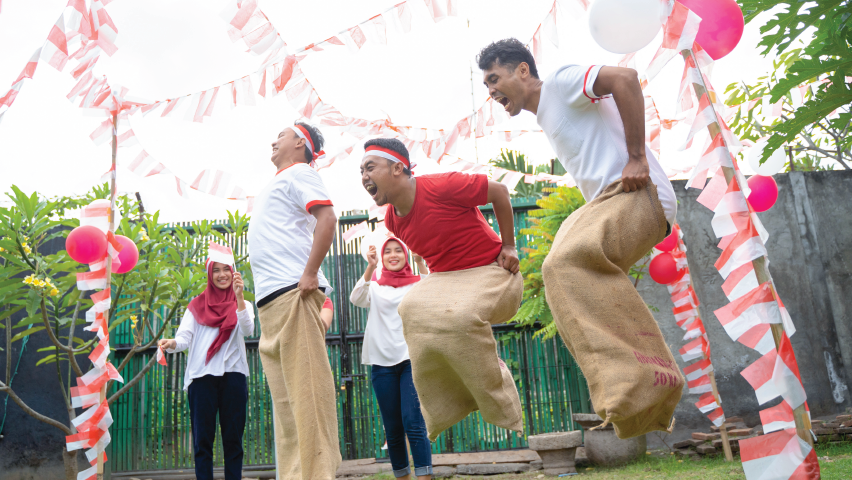
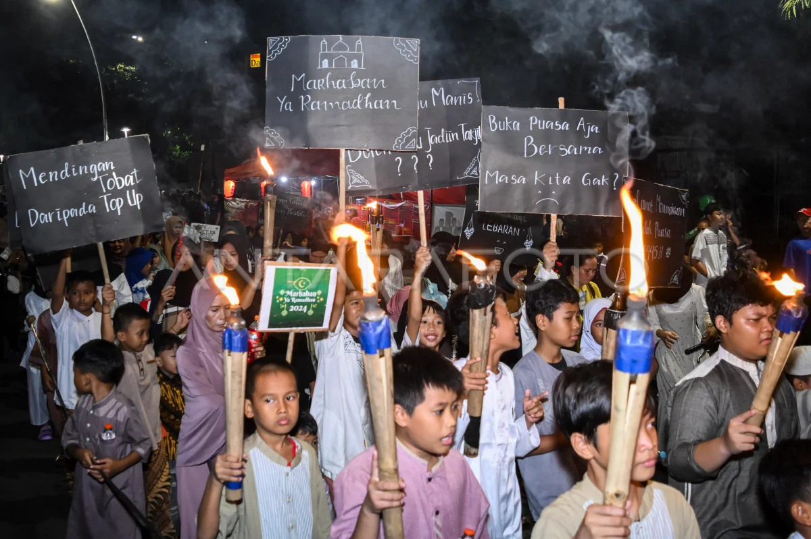
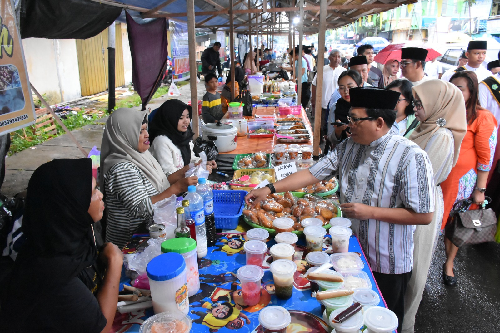

Karang Taruna RW 07 adalah organisasi pemuda di RW 07 yang bertujuan untuk meningkatkan kesejahteraan sosial dan kebersamaan melalui berbagai kegiatan positif.
Tentang Kami
Karang Taruna RW 07 didirikan pada tahun 2025 dengan tujuan untuk menciptakan lingkungan yang harmonis dan saling mendukung. Kami memiliki berbagai program untuk pemberdayaan pemuda, pendidikan, dan kegiatan sosial.
Kegiatan
Kami mengadakan berbagai kegiatan, termasuk pelatihan keterampilan, kerja bakti, bakti sosial, olahraga, dan seni. Berikut adalah beberapa kegiatan terbaru kami:
Kerja Bakti Lingkungan
Turnamen Futsal Antar-RW
Galeri

Upacara Peringatan 17 Agustus 2024 - Momen penuh semangat dan kebersamaan dalam memperingati Hari Kemerdekaan Indonesia.

Pawai Obor Menyambut Ramadhan 2024 - Kegiatan semarak yang dilakukan warga RW 07 untuk menyambut bulan suci Ramadhan.

Bazar Ramadhan 2024 - Ajang berkumpulnya warga RW 07 untuk berbelanja kebutuhan Ramadhan dengan harga terjangkau.
Berita dan Pengumuman
Baca artikel terbaru dan pengumuman penting dari Karang Taruna RW 07:
Pawai Obor Menyambut Ramadhan
Pada tanggal 25 Februari 2025, Karang Taruna RW 07 akan mengadakan Pawai Obor Menyambut Ramadhan yang akan dimulai dari Balai RW 07 dan berkeliling di sekitar RW. Mari kita bersama-sama menyambut bulan suci dengan penuh semangat dan kebersamaan.
Bazar Ramadhan 2025
Karang Taruna RW 07 akan menyelenggarakan Bazar Ramadhan pada tanggal 03 Maret 2025 di Wilayah RW 07. Bazar ini akan menyediakan berbagai kebutuhan Menu berbuka puasa. Jangan lewatkan kesempatan ini!
Kontak Kami
Jika Anda memiliki pertanyaan atau ingin bergabung dengan Karang Taruna RW 07, silakan hubungi kami:
Email: karangt4runa07@gmail.com
Telepon: +62 812-3456-7890
Alamat: Jalan Kebon Mangga 1, Kebayoran Lama, Cipulir. Jakarta Selatan 12230